Beigesoft™ EIS for Android.
Keywords: Double entry accounting software for Android.
This is the same WEB application that is based on embedded A-Jetty for Android. Beigesoft™ EIS for Android complies the rules https://play.google.com/about/privacy-security/personal-sensitive/, i.e. private data (SQLite database, private log files, key-store with keys for encryption) are placed in the private application storage. All other applications can't read these files. Beigesoft™ EIS uses encryption to make HTTPS connection and to backup encrypted SQLite databases and the log files. You can share (export/import) these files in the two secure ways:
- via Google Driver without encryption
- via the shared storage with encryption
*You must learn and accept the privacy policy to use this application!
Bob decided to try this application on his Android smartphone. He installed Beigesoft™ EIS from Google Play Store. He started it in the same way as described in Software installation....
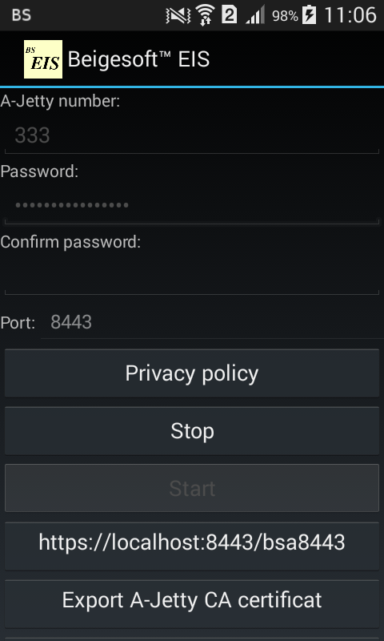
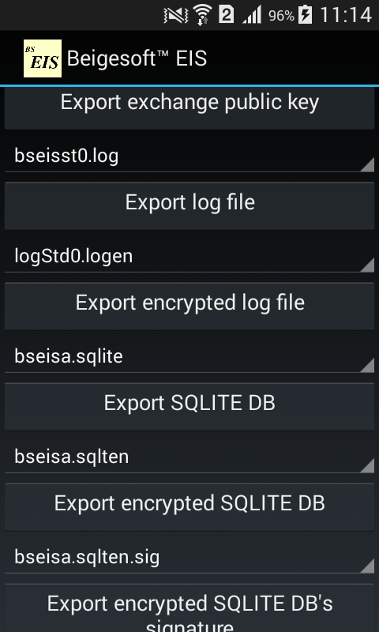
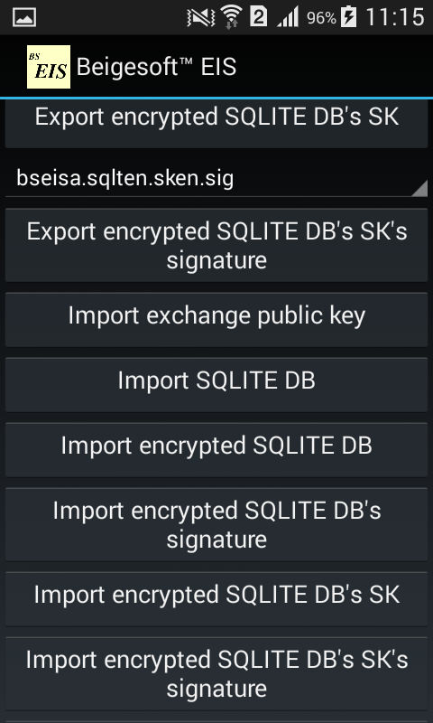
Files ajetty-ca.pem and ajetty-file-exch777.kpub will be in the application private storage. Restart the application, and export these non-private files by using the starting interface (see above). To install the A-Jetty CA certificate select Settings -> Security -> Install certificate from storage (you will be forced to set screen locking - PIN with/without fingerprint, if you don't do it yet):
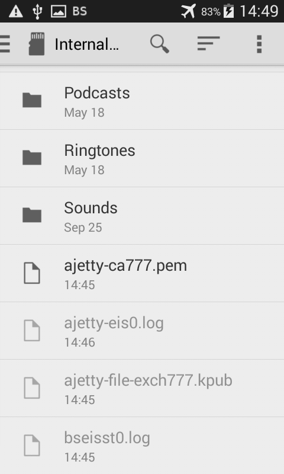
You can find this certificate in Security -> Trusted Credentials -> User: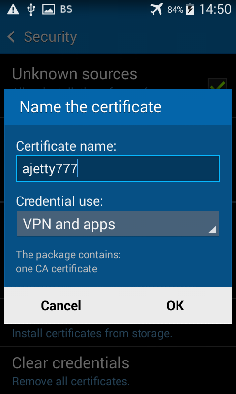
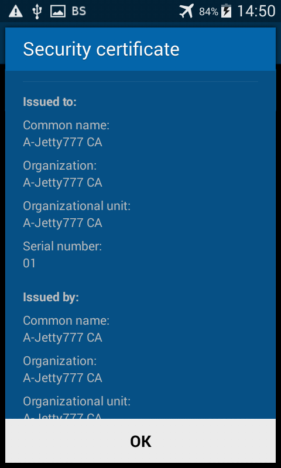
After that Android might blame "A trusted certificate on your device is allowing a third party to monitor your network...":
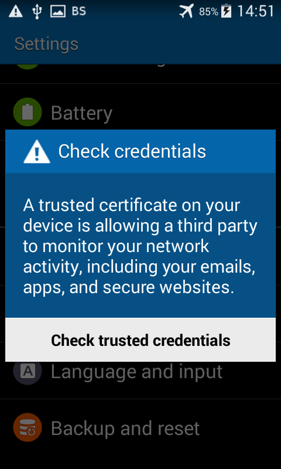
* new Android versions (e.g. 7.0) do not show this message. The newest Android versions may warn "CA certificate installed".
You can work without installing the A-Jetty CA certificate. Just push "Advanced", then "Proceed to localhost (unsafe)". In this case (without installing the CA certificate) the red HTTPS sign will be the only problem, the connection will be encrypted well, so software, that can intercept your traffic locally (intercept TCP port e.g. an anti-virus), can't read your data (decrypt your traffic).
The start menu is:
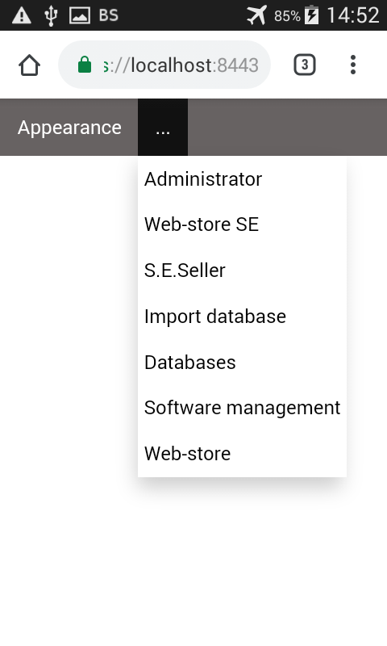
You can import a SQLITE database without encryption via Google Drive. But if you install Beige EIS on your computer in protected from light harmful software way, then you can export your database from computer to your Android device via non-private places like shared storage. Bob did so, so he decided to check this sharing method.
To send encrypted SQLite database from his notebook to his smartphone, Bob copied the public key ajetty-file-exch777.kpub from his smartphone to his notebook folder /home/accountant/beige-accjet/pub-exch:
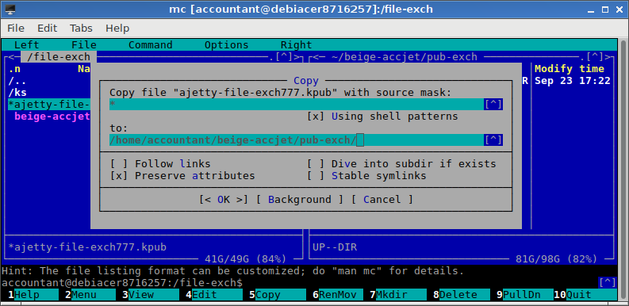
* If a public key is not readable for others, then you should change its permissions, e.g. "sudo chmod o+r ajetty-file-exch777.kpub"!
* New Android versions may not show files in the internal storage, so you have to copy the files from/to external storage (CD) by using Android file explorer!
Then Bob opened the Database Manager, checked SHA1 fingerprint of public key A-Jetty777, then pressed backup:
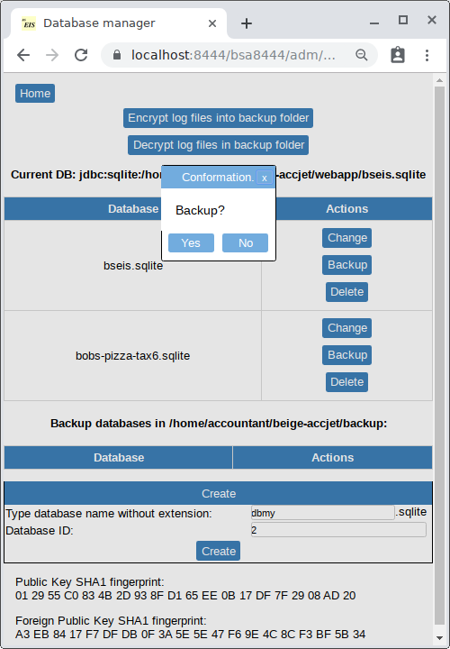
Then he copied 4 just created encrypted files and the notebook's A-Jetty's public key ajetty-file-exch444.kpub into the smartphone's shared storage, e.g. a folder "Bseis":
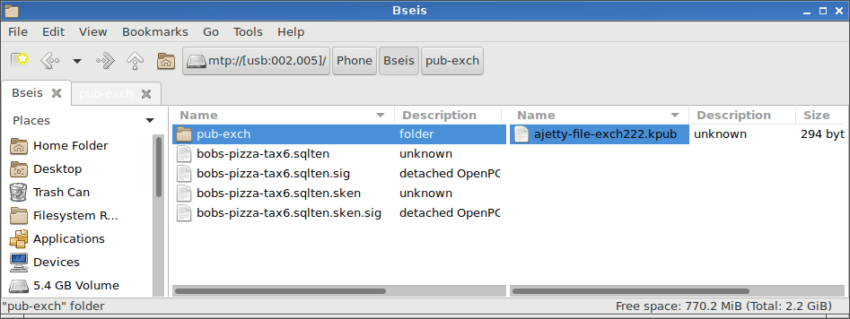
These files are:
- bobs-pizza-tax6.sqlten - database that is encrypted with 256bit AES session symmetric key.
- bobs-pizza-tax6.sqlten.sig - encrypted database signature that is made with A-Jetty444 private 2048bit RSA key
- bobs-pizza-tax6.sqlten.sken - 256bit AES session symmetric key that is encrypted with A-Jetty777 public 2048bit RSA key, this file can be decrypted only with A-Jetty777 RSA private key
- bobs-pizza-tax6.sqlten.sken.sig - encrypted AES key signature that is made with A-Jetty444 private 2048bit RSA key
Then Bob restored database on smartphone by using the main starting interface to copy these files into the private storage, then the WEB interface to decrypt the database and switch into it:
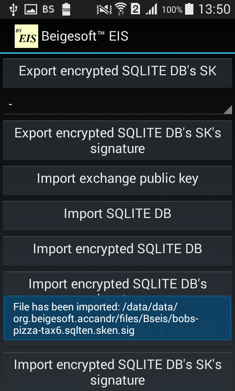
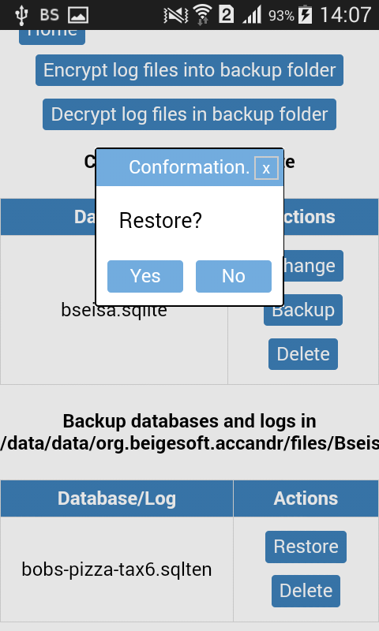
He looks at the same data:
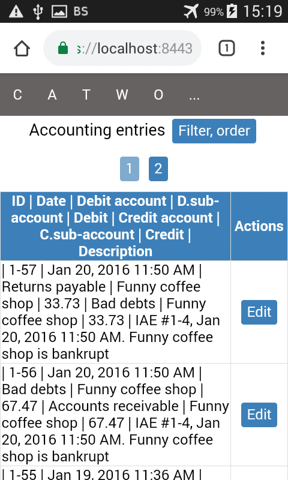
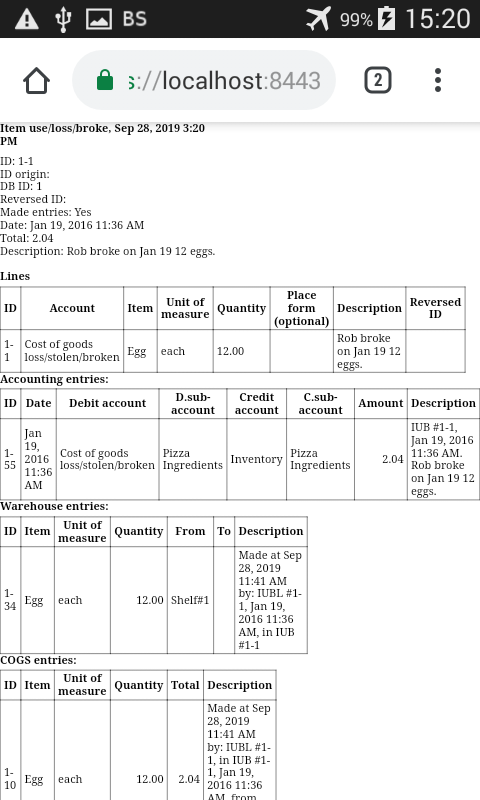
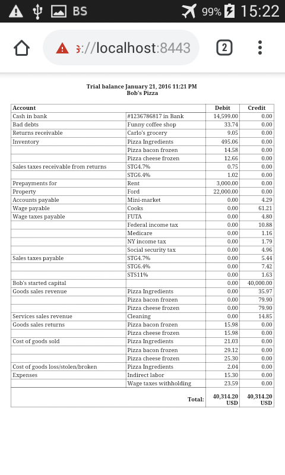
He can create a new sales invoice:
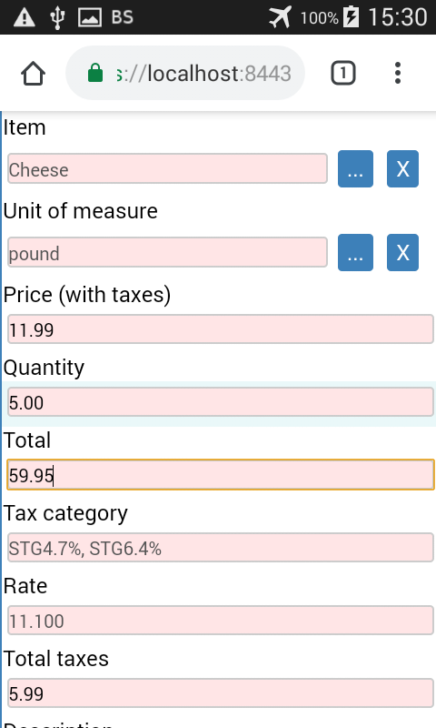